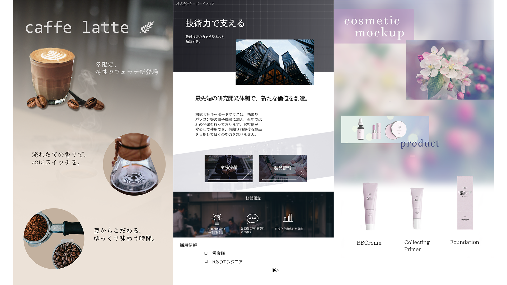

webデザイナーを志すようになってから１か月の内に練習として作っていたものです。 デザインを考える際に大切にしていたことは、見る人が受け取る印象です。与えたい企業イメージとマッチしたデザインを作るために は、どのような写真素材と、その加工が必要かという事。また、余白と情報量を調節して視線が迷わない設計を作るために試行錯誤しま した。
使用ツールはphotoshopとillustratorです。